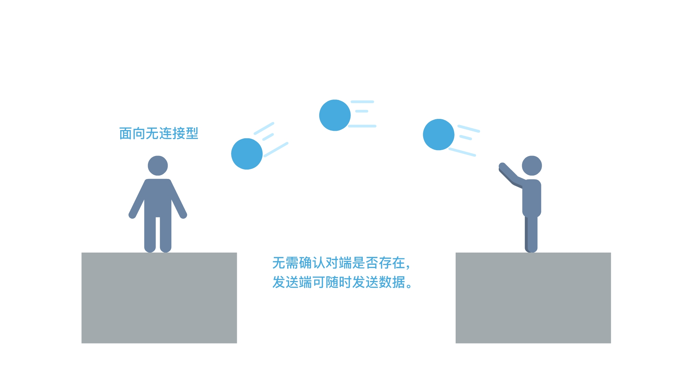
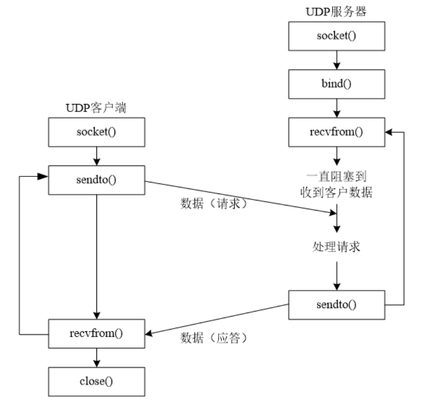

<!DOCTYPE lake>
<h3 data-lake-id="GznAJ" data-lake-index-type="2" id="GznAJ"><span data-lake-id="u18c3834d" id="u18c3834d" style="color: rgba(0, 0, 0, 0.87)">UDP简介</span></h3><p data-lake-id="uc43d35ab" id="uc43d35ab"><span data-lake-id="ubdab62e6" id="ubdab62e6" style="color: rgba(0, 0, 0, 0.87)">UDP是无连接通信协议，即在数据传输时，数据的发送端和接收端</span><strong><span data-lake-id="u84630868" id="u84630868" style="color: rgba(0, 0, 0, 0.87)">不建立逻辑连接</span></strong><span data-lake-id="ub9a7a2f8" id="ub9a7a2f8" style="color: rgba(0, 0, 0, 0.87)">。简单来说，当一台计算机向另外一台计算机发送数据时，发送端不会确认接收端是否存在，就会发出数据，同样接收端在收到数据时，也不会向发送端反馈是否收到数据。</span></p><p data-lake-id="u2692cf41" id="u2692cf41"><span data-lake-id="u4d2a5992" id="u4d2a5992" style="color: rgba(0, 0, 0, 0.87)">由于使用UDP协议消耗资源小，通信效率高，所以通常都会用于音频、视频和普通数据的传输例如视频会议都使用UDP协议，因为这种情况即使偶尔丢失一两个数据包，也不会对接收结果产生太大影响。但是在使用UDP协议传送数据时，由于UDP的面向无连接性，不能保证数据的完整性，因此在传输重要数据时不建议使用UDP协议。</span></p><p data-lake-id="u8ffce8dc" id="u8ffce8dc"><span data-lake-id="u748f5909" id="u748f5909" style="color: rgba(0, 0, 0, 0.87)">UDP传输的每个数据包被限制在64K以内（数据包大小由一个16位的无符号整数记录）。</span></p><p data-lake-id="ua7cf6c3b" id="ua7cf6c3b"></p><p data-lake-id="ue175a701" id="ue175a701"><span data-lake-id="uf43ef01b" id="uf43ef01b" style="color: rgba(0, 0, 0, 0.87)">UDP (User Datagram Protocol )不提供复杂的控制机制, 如果传输过程中出现丢包, UDP 也不负责重发. 甚至当出现包到达顺序乱掉时候也没有纠正的功能. 由于 UDP 面向无连接, 它可以随时发送数据. 再加上 UDP 本身的处理既简单又高效, 因此常用于以下几个方面:</span></p><ul list="u8645073d"><li data-lake-id="ue193b015" fid="u48c724cf" id="ue193b015"><span data-lake-id="ue49aa852" id="ue49aa852" style="color: rgba(0, 0, 0, 0.87)">包总量较少的通信(DNS).</span></li><li data-lake-id="udfa36bc8" fid="u48c724cf" id="udfa36bc8"><span data-lake-id="u44faef6e" id="u44faef6e" style="color: rgba(0, 0, 0, 0.87)">视频、音频等多媒体通信(即时通信).</span></li><li data-lake-id="u4959cdfa" fid="u48c724cf" id="u4959cdfa"><span data-lake-id="u6aab113c" id="u6aab113c" style="color: rgba(0, 0, 0, 0.87)">限定于 LAN 等特定网络中的应用通信.</span></li><li data-lake-id="u97264358" fid="u48c724cf" id="u97264358"><span data-lake-id="u8d60c3b5" id="u8d60c3b5" style="color: rgba(0, 0, 0, 0.87)">广播通信(广播、多播)</span></li></ul><h3 data-lake-id="ohePo" data-lake-index-type="2" id="ohePo"><span data-lake-id="uc4f35e3e" id="uc4f35e3e" style="color: rgba(0, 0, 0, 0.87)">UDP的特点</span></h3><ul list="ueab3bcf5"><li data-lake-id="u3e7205ac" fid="u2151bebf" id="u3e7205ac"><span data-lake-id="u9e27aa55" id="u9e27aa55" style="color: rgba(0, 0, 0, 0.87)">需要资源少</span></li><li data-lake-id="udad0afff" fid="u2151bebf" id="udad0afff"><span data-lake-id="u10f4f0d9" id="u10f4f0d9" style="color: rgba(0, 0, 0, 0.87)">不保证接收</span></li><li data-lake-id="ue872e98c" fid="u2151bebf" id="ue872e98c"><span data-lake-id="u203f899b" id="u203f899b" style="color: rgba(0, 0, 0, 0.87)">无连接</span></li><li data-lake-id="ucd5e697f" fid="u2151bebf" id="ucd5e697f"><span data-lake-id="u8cfc9bd8" id="u8cfc9bd8" style="color: rgba(0, 0, 0, 0.87)">快</span></li></ul><h3 data-lake-id="WVwHa" data-lake-index-type="2" id="WVwHa"><span data-lake-id="u9e37431a" id="u9e37431a" style="color: rgba(0, 0, 0, 0.87)">UDP和TCP的区别</span></h3><table class="lake-table" data-lake-id="iPWf8" id="iPWf8" margin="true" style="width: 750px"><colgroup><col width="375"/><col width="375"/></colgroup><tbody><tr data-lake-id="u2c4a78a7" id="u2c4a78a7"><td data-lake-id="u872bf218" id="u872bf218"><p data-lake-id="ua6855dda" id="ua6855dda" style="text-align: center"><strong><span data-lake-id="u1d3865ae" id="u1d3865ae" style="color: rgba(0, 0, 0, 0.87)">UDP</span></strong></p></td><td data-lake-id="u468d774e" id="u468d774e"><p data-lake-id="u3f2fcfbc" id="u3f2fcfbc" style="text-align: center"><strong><span data-lake-id="u1ff2b030" id="u1ff2b030" style="color: rgba(0, 0, 0, 0.87)">TCP</span></strong></p></td></tr><tr data-lake-id="u23352755" id="u23352755"><td data-lake-id="u87d84908" id="u87d84908"><p data-lake-id="ufba0ddca" id="ufba0ddca" style="text-align: left"><span data-lake-id="uf819274d" id="uf819274d" style="color: rgba(0, 0, 0, 0.87)">面向</span><strong><span data-lake-id="u0e0d1d50" id="u0e0d1d50" style="color: rgba(0, 0, 0, 0.87)">无连接</span></strong></p></td><td data-lake-id="ufd45b724" id="ufd45b724"><p data-lake-id="u46e32c84" id="u46e32c84" style="text-align: left"><span data-lake-id="u6a0823fb" id="u6a0823fb" style="color: rgba(0, 0, 0, 0.87)">面向</span><strong><span data-lake-id="u0c6c697c" id="u0c6c697c" style="color: rgba(0, 0, 0, 0.87)">有连接</span></strong></p></td></tr><tr data-lake-id="u16879997" id="u16879997"><td data-lake-id="ua948ea76" id="ua948ea76"><p data-lake-id="u61a5af13" id="u61a5af13" style="text-align: left"><span data-lake-id="u56a26df7" id="u56a26df7" style="color: rgba(0, 0, 0, 0.87)">支持一对一、一对多、多对一、和多对多的通信</span></p></td><td data-lake-id="u1560ea64" id="u1560ea64"><p data-lake-id="ubd48d790" id="ubd48d790" style="text-align: left"><span data-lake-id="u6b62f805" id="u6b62f805" style="color: rgba(0, 0, 0, 0.87)">只能有两个端点，实现一对一的通信</span></p></td></tr><tr data-lake-id="u88a9101c" id="u88a9101c"><td data-lake-id="u9e5d05dc" id="u9e5d05dc"><p data-lake-id="ua317e963" id="ua317e963" style="text-align: left"><strong><span data-lake-id="u87484451" id="u87484451" style="color: rgba(0, 0, 0, 0.87)">不保证</span></strong><span data-lake-id="u37f11b29" id="u37f11b29" style="color: rgba(0, 0, 0, 0.87)">数据传输的可靠性</span></p></td><td data-lake-id="u1a98e312" id="u1a98e312"><p data-lake-id="u127f2c25" id="u127f2c25" style="text-align: left"><span data-lake-id="u42c2f2d4" id="u42c2f2d4" style="color: rgba(0, 0, 0, 0.87)">传输数据无差错，不丢失，不重复，且按时序到达</span></p></td></tr><tr data-lake-id="u160075b2" id="u160075b2"><td data-lake-id="u4ea55c96" id="u4ea55c96"><p data-lake-id="u497aa0cf" id="u497aa0cf" style="text-align: left"><span data-lake-id="udcd38d85" id="udcd38d85" style="color: rgba(0, 0, 0, 0.87)">占用资源较</span><strong><span data-lake-id="uc6e83b54" id="uc6e83b54" style="color: rgba(0, 0, 0, 0.87)">少</span></strong></p></td><td data-lake-id="ue98551eb" id="ue98551eb"><p data-lake-id="u751747fe" id="u751747fe" style="text-align: left"><span data-lake-id="u95375793" id="u95375793" style="color: rgba(0, 0, 0, 0.87)">占用资源较</span><strong><span data-lake-id="ubdba35db" id="ubdba35db" style="color: rgba(0, 0, 0, 0.87)">多</span></strong></p></td></tr></tbody></table><h3 data-lake-id="WiS9Z" data-lake-index-type="2" id="WiS9Z"><span data-lake-id="u5638a041" id="u5638a041" style="color: rgba(0, 0, 0, 0.87)">UDP接收和发送流程</span></h3><p data-lake-id="u8ea2de5d" id="u8ea2de5d"></p><h3 data-lake-id="fnuyp" id="fnuyp"><br/></h3>